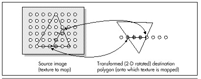
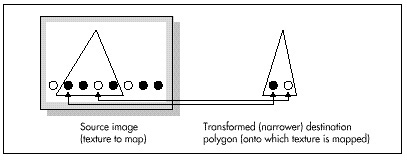

Figure 56.3 Mapping a texture onto a 2-D rotated polygon.
| Previous | Table of Contents | Next |
Ah, but what is an “equivalent amount”? Think of it this way. If a destination edge is 100 scan lines high, it will be stepped 100 times. Then, we’ll divide the SourceXWidth and SourceYHeight lengths of the source edge by 100, and add those amounts to the source edge’s coordinates each time the destination is stepped one scan line. Put another way, we have, as usual, arranged things so that in the destination polygon we step DestYHeight times, where DestYHeight is the height of the destination edge. The this approach arranges to step the source image edge DestYHeight times also, to match what the destination is doing.
Figure 56.3 Mapping a texture onto a 2-D rotated polygon.
Now we’re able to track the coordinates of the polygon edges through the source image in tandem with the destination edges. Stepping across each destination scan line uses precisely the same technique, as shown in Figure 56.4. In the destination, we step DestXWidth times across each scan line of the polygon, once for each pixel on the scan line. (DestXWidth is the horizontal distance between the two edges being scanned on any given scan line.) To match this, we divide SourceXWidth and SourceYHeight (the lengths of the scan line in the source image, as determined by the source edge points we’ve been tracking, as just described) by the width of the destination scan line, DestXWidth, to produce SourceXStep and SourceYStep. Then, we just step DestXWidth times, adding SourceXStep and SourceYStep to SourceX and SourceY each time, and choose the nearest image pixel to (SourceX,SourceY) to copy to (DestX, DestY). (Note that the names used above, such as SourceXWidth, are used for descriptive purposes, and don’t necessarily correspond to the actual variable names used in Listing 56.2.)
That’s a workable approach for 2-D rotated polygons—but what about 3-D rotated polygons, where the visible dimensions of the polygon can vary with 3-D rotation and perspective projection? First, I’d like to make it clear that texture mapping takes place from the source image to the destination polygon after the destination polygon is projected to the screen. That is, the image will be mapped after the destination polygon is in its final, drawable form. Given that, it should be apparent that the above approach automatically compensates for all changes in the dimensions of a polygon. You see, this approach divides source edges and scan lines into however many steps the destination polygon requires. If the destination polygon is much narrower than the source polygon, as a result of 3-D rotation and perspective projection, we just end up taking bigger steps through the source image and skipping a lot of source image pixels, as shown in Figure 56.5. The upshot is that the above approach handles all transformations and projections effortlessly. It could also be used to scale source images up to fit in larger polygons; all that’s needed is a list of where the polygon’s vertices map into the source image, and everything else happens automatically. In fact, mapping from any polygonal area of a bitmap to any destination polygon will work, given only that the two polygons have the same number of vertices.

Figure 56.4 Mapping a horizontal destination scan line back to the source image.

Figure 56.5 Mapping a texture onto a narrower polygon.
That’s all there is to quick-and-dirty texture mapping. This technique basically uses a two-stage digital differential analyzer (DDA) approach to step through the appropriate part of the source image in tandem with the normal scan-line stepping through the destination polygon, so I’ll call it “DDA texture mapping.” It’s worth noting that there is no need for any trigonometric functions at all, and only two divides are required per scan line.
This isn’t a perfect approach, of course. For one thing, it isn’t anywhere near as fast as drawing solid polygons; the speed is more comparable to drawing each polygon as a series of lines. Also, the DDA approach results in far from perfect image quality, since source pixels may be skipped or selected twice. I trust, however, that you can see how easy it would be to improve image quality by antialiasing with the DDA approach. For example, we could simply average the four surrounding pixels as we did for simple, unweighted antialiasing in Chapters F, G,Chapter K on the companion CD-ROM. Or, we could take a Wu antialiasing approach (see Chapter 57) and average the two bracketing pixels along each axis according to proximity. If we had cycles to waste (which, given that this is real-time animation on a PC, we don’t), we could improve image quality by putting the source pixels through a low-pass filter sized in X and Y according to the ratio of the source and destination dimensions (that is, how much the destination is scaled up or down from the source).
Even more important is that the sort of texture mapping I’ll do in X-Sharp doesn’t correct for perspective. That doesn’t much matter for small polygons or polygons that are nearly parallel to the screen in 3-space, but it can produce very noticeable bowing of textures on large polygons at an angle to the screen. Perspective texture mapping is a complex subject that’s outside the scope of this book, but you should be aware of its existence, because perspective texture mapping is a key element of many games these days.
Finally, I’d like to point out that this sort of DDA texture mapping is display-hardware dependent, because the bitmap for each image must be compatible with the number of bits per pixel in the destination. That’s actually a fairly serious issue. One of the nice things about X-Sharp’s polygon orientation is that, until now, the only display dependent part of X-Sharp has been the transformation from RGB color space to the adapter’s color space. Compensation for aspect ratio, resolution, and the like all happens automatically in the course of projection. Still, we need the ability to display detailed surfaces, and it’s hard to conceive of a fast way to do so that’s totally hardware independent. (If you know of one, let me know care of the publisher.)
For now, all we need is fast texture mapping of adequate quality, which the straightforward, non-antialiased DDA approach supplies. I’m sure there are many other fast approaches, and, as I’ve said, there are more accurate approaches, but DDA texture mapping works well, given the constraints of the PC’s horsepower. Next, we’ll look at code that performs DDA texture mapping. First, though, I’d like to take a moment to thank Jim Kent, author of Autodesk Animator and a frequent correspondent, for getting me started with the DDA approach.
| Previous | Table of Contents | Next |